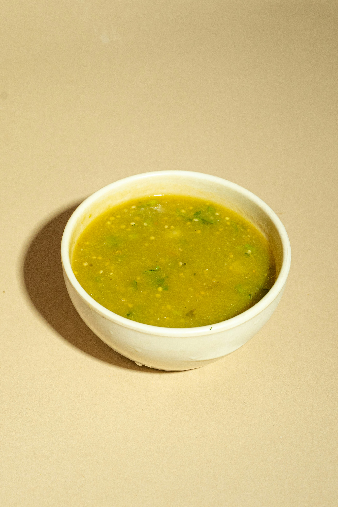

Salsa Verde

Description
A quick and easy salsa verde recipe that is perfect for street tacos and requires only a handful of ingredients.
Ingredients
- 4 tomatillos
- 1 jalapeño
- 2 serranos
- 1 handful of cilantro
- 2 garlic cloves
- 1 chicken bouillon cube
- 1tbsp of black pepper
- 1tbsp of salt
- 1 cup of water
Steps
- Bring a pot of water to a boil.
- Boil the tomatillos until their color changes to a darker dull green, then remove and place into a blender.
- Next boil the jalapeño and serranos until they soften slightly, cut off the stems and add the softened peppers to the blender.
- Place the 2 garlic gloves and cilantro to the blender.
- Add 1 cup of water to the blender. (You can use some of the water you boiled.)
- Add the chicken bouillon, salt, and pepper to the blender.
- Blend to your desired consistency.
Home